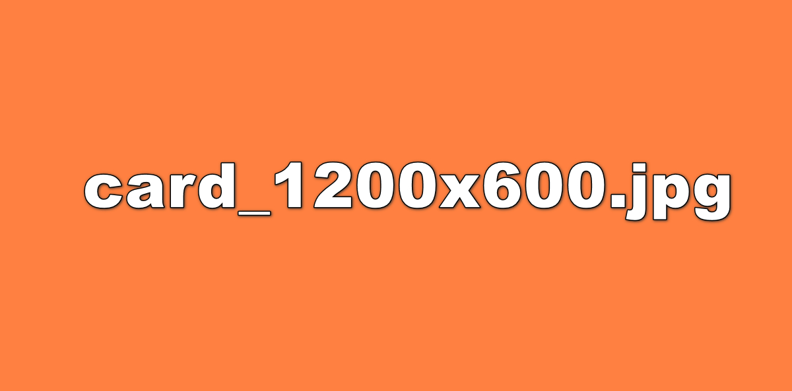
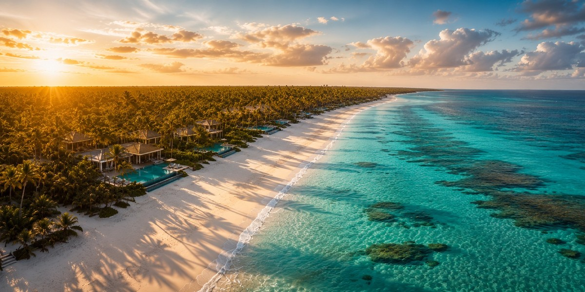
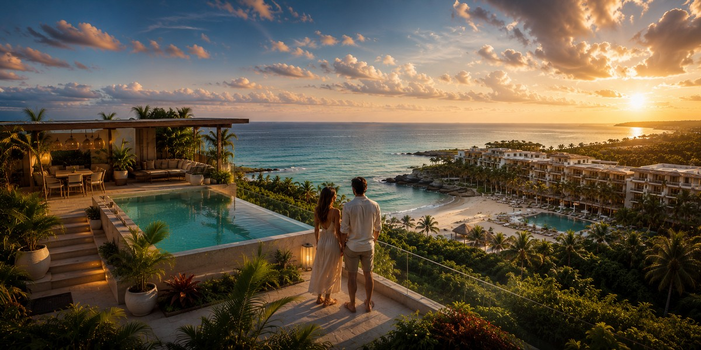
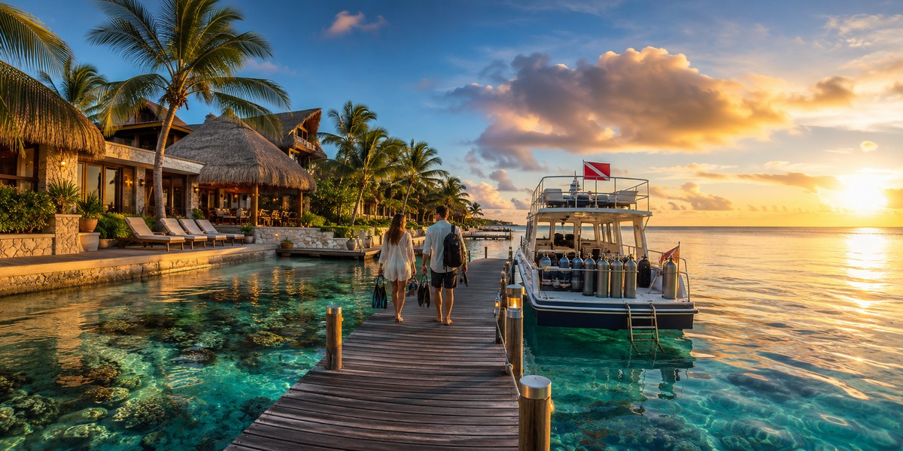
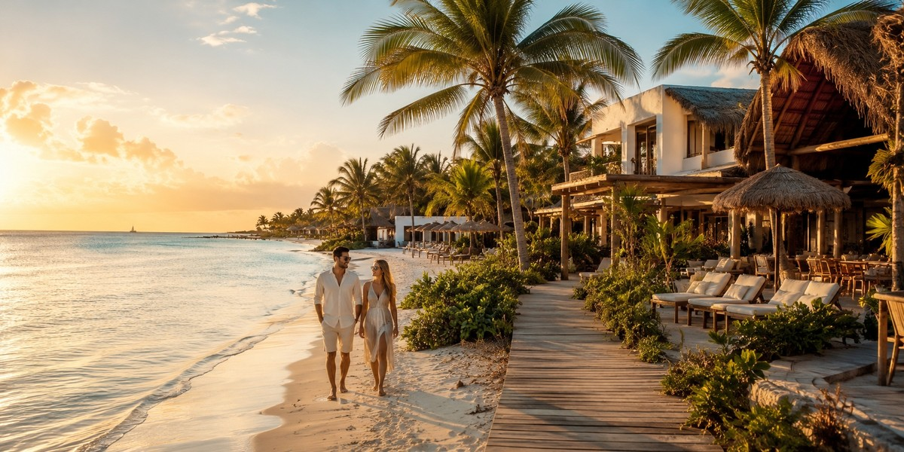
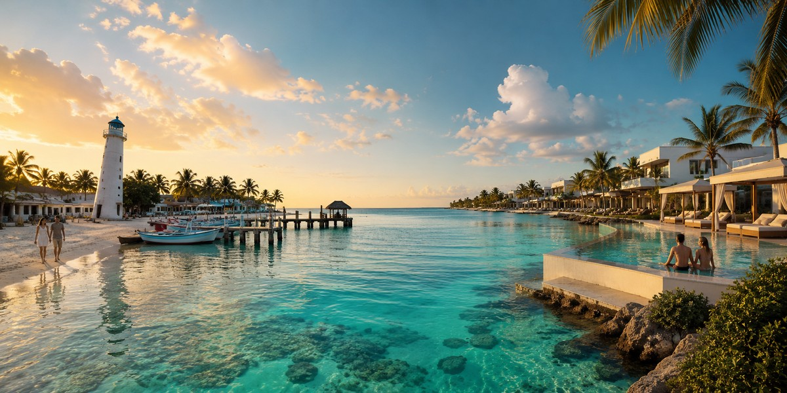

Рив'єра-Майя: Канкун, Плая і Тулум
Як влаштовані Канкун, Плая-дель-Кармен, Тулум і resort-зони — карта, яку варто прочитати до вибору готелю.

Усвідомлений вибір напрямків, готелів і формату відпочинку — без помилок і переплат.
Обрати країну →Три принципи, які допомагають обирати відпочинок усвідомлено.
Шукаємо повторювані скарги та збіги у відгуках, а не орієнтуємось лише на загальний рейтинг.
Оцінюємо рельєф, відстань до пляжу та реальне розташування готелю через карту та фото гостей.
Перевіряємо податки, курортні збори та умови скасування, щоб бачити реальну ціну відпочинку.
Досліджуйте Мексику, Домініканську Республіку та Карибський регіон за допомогою наших детальних путівників.
Гіди по курортах та готелях Мексики
Канкун, Плая-дель-Кармен і Тулум
Планування подорожі без помилок бронювання
Пунта-Кана та поза її межами
Курорти • Пляжі • Планування подорожі
Готелі, перельоти та планування відпустки
Досліджуйте острови Карибського моря
Маршрути • Круїзи • Пляжні напрямки
Знайдіть найкращий острів для вашої подорожі
Уперше на Рив'єрі-Майя? Спочатку прочитайте хаб — він розкладає всі гайди за рішеннями, які ви ухвалюєте. Потім оберіть точку старту нижче.
Відкрити хаб «Рив'єра-Майя» →
Як влаштовані Канкун, Плая-дель-Кармен, Тулум і resort-зони — карта, яку варто прочитати до вибору готелю.

Чесний розбір з акцентом на рішення: куди поїхати в першу карибську пляжну поїздку і кому підходять Канкун, Рив'єра-Майя, Тулум і Пунта-Кана.

Перед бронюванням: район, тип пляжу, відгуки, реальна фінальна ціна, номер, формат курорту й червоні прапорці скасування.

Сухий сезон, ціни, натовпи й саргасум за місяцями — найкращий час для новачків, сімей і бюджетних поїздок.

Реалістичний бюджет на 2026 рік у трьох форматах — переліт, готелі, їжа й приховані витрати.

Що насправді означають попередження США та Канади, які щоденні ризики важливіші за все і як уникнути рідкісних проблем у туристів.
Практичний маршрут через PUJ: безплатний офіційний eTicket, зрозуміле проходження прильоту й правильний транспорт до курорту.

Три райони Пунта-Кани — три різні сценарії відпустки. Порівняйте пляжі, атмосферу, трансфери, ціни та курорти до бронювання.

Що насправді являє собою Пунта-Кана, чому це не Канкун, обов'язковий безкоштовний eTicket, сезони, гроші та райони — чесний розбір для тих, хто їде вперше.

Кондо виглядає дешевшим, поки ви не додасте збір за прибирання, комісію сервісу, податок на проживання та чотири поїздки на таксі щодня. Ось де оренда дійсно виграє, а де непомітно перемагають готелі.

Дайв-резорти на узбережжі з власними пірсами, бутик-готелі в Сан-Мігелі або бюджетні номери поруч із поромом — як вибрати базу на Косумелі, з реальною математикою вартості дайв-тижня.

Обирайте готель на Холбоксі за зоною та рівнем комфорту: еко-касіти, бутик-готелі або розкішні лоджі. Кондиціонери, електрика, москітні сітки та нюанси бронювання на острові без машин.
Тусовочний хостел, тиха база біля автовокзалу чи місце для цифрових кочівників з басейном: як вибрати хостел у Канкуні та Тулумі і не пошкодувати.

Два абсолютно різні варіанти відпочинку в Пуерто-Морелос: номер у бутик-готелі в кварталі від площі або розкішний курорт «все включено» на північ від міста. Як зробити правильний вибір.
Приліт опівночі або виліт о 5 ранку — це логістичне завдання, а не відпустка. Розповідаємо, в якому готелі біля аеропорту Канкуна краще зупинитися, до якого можна дійти пішки, а на чий шатл варто покладатися.
Travel Radar LK — незалежний проєкт для тих, хто хоче планувати подорожі усвідомлено. Головний фокус зараз — Мексика, Домініканська Республіка та Карибський регіон. Тут зібрані практичні статті, порівняння локацій і чесні travel-розбори без зайвого шуму.
Якщо десь на сайті є партнерські посилання, ми позначаємо це прямо. Докладніше про проєкт →